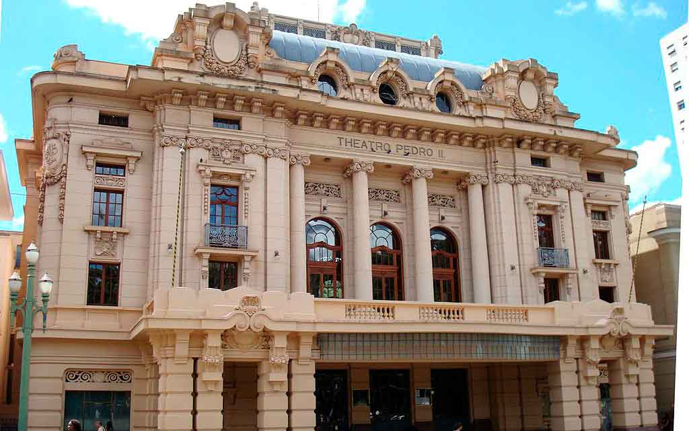
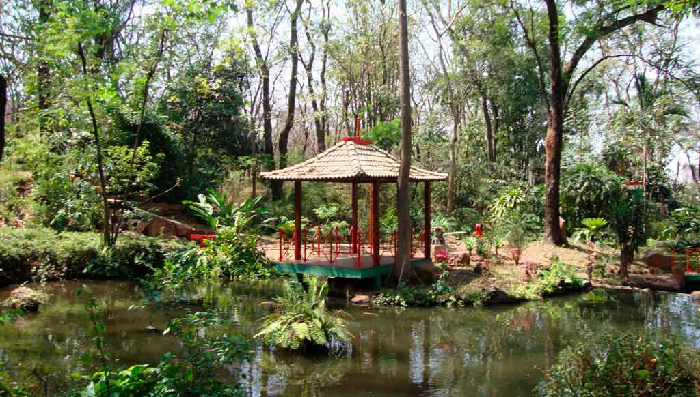
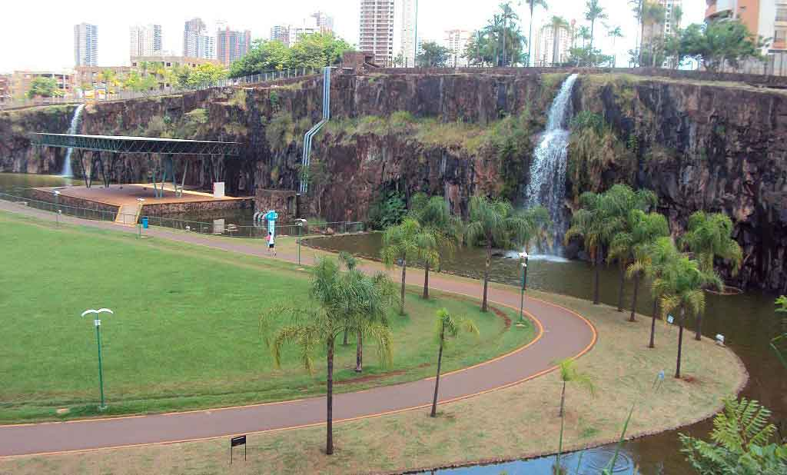

O primeiro fruto cultivado na terra roxa e que fez da cidade uma capital do mundo, foi o café. Tudo começou com os mineiros, desbravadores dessa região e que praticavam uma agricultura de subsistência, por volta de 1811. Depois, já estabelecidos como fazendeiros, eles foram os doadores das terras para a criação do patrimônio de São Sebastião com a finalidade de manter uma capela em honra do santo e, assim, cumprir as exigências da Lei da Terra para legalizar suas propriedades. A história de Ribeirão Preto, em 1845, conta que foi feita a primeira de muitas doações. Em 19 de junho de 1856 foram lavradas as escrituras e demarcado o patrimônio da Igreja. A data é considerada como a da fundação do município, segundo a Lei Municipal 386, de 24/12/1954. O nome Ribeirão Preto veio do córrego que atravessava o então povoado, chamado de Preto. E São Sebastião, o santo venerado pelos primeiros habitantes, tornou-se padroeiro do município.
A história de Ribeirão Preto conta sobre a produção do café: A produção de café foi a primeira atividade agrícola intensiva de Ribeirão Preto, introduzida por famílias de fazendeiros que vieram de outras regiões. Ribeirão Preto era uma nova e potencial frente agrícola com terra de qualidade e clima apropriado. As lavouras começaram a ser plantadas em 1870. Em 1900, o café produzido no município era conhecido principalmente na Europa.
A espécie predominante por aqui foi o bourbon. A cafeicultura foi responsável pelo grande desenvolvimento experimentado pela cidade que tornou-se a Capital Mundial do Café. A demanda por mão de obra fez de Ribeirão Preto o destino de imigrantes italianos, japoneses, alemães, entre tantos. Também motivou a vinda da Estação Companhia Mogiana de Estrada de Ferro, em 1883, para o transporte de imigrantes desde o litoral e, na volta, escoar a produção agrícola. O café impulsionou o progresso econômico da cidade que viveu anos de glória. Mas a crise econômica mundial de 1929 encerrou a fase próspera do café na região. Outro ciclo econômico surgiu. As terras foram ocupadas com culturas, como o algodão e frutas. E, aos poucos, a cana-de-açúcar foi reintroduzida.
Fonte: https://www.ribeiraopretoconvention.org.br/nossa-historia/
Riberão Preto possui diversos pontos turísticos, locais de visitação turística com relevância cultural e/ou natural, com a possibilidade de contemplação, lugares incríveis para você visitar é o que não falta! Para te ajudar separamos 3 que você precisa conhecer.
Entre os pontos turísticos em Ribeirão Preto, visite o Theatro Pedro II, um dos edifícios históricos mais importantes da cidade. Inclusive, ele está entre os melhores teatros do país quando o assunto é a acústica. Com uma arquitetura imponente e uma decoração belíssima, o teatro é palco de espetáculos sinfônicos e de óperas. Ao todo, o local tem capacidade para receber mais de 1500 espectadores. É possível fazer uma visita guiada e conhecer todas as dependências do lugar.
Este é um dos mais encantadores pontos turísticos em Ribeirão Preto. Localizado no Bosque Municipal Fábio Barreto, o Jardim Japonês é muito querido na cidade. O paisagismo, desenvolvido por Mitsutery Naganune, é belíssimo e encanta aos visitantes. O jardim também possui lagos, pontes, quiosques e monumentos que remetem à cultura oriental nipônica. Você também poderá ver um bonsai com cerca de 25 anos, que foi doado por Shozo Mishima, um artista plástico japonês. O ambiente foi doado pela colônia japonesa radicada na cidade e se tornou um lugar querido pela população local e pelos turistas.
naugurado em 2004, o parque Doutor Luis Carlos Raya foi construído em um espaço de mais de 40 mil metros quadrados, que antes era utilizado para a prática da mineração.
Fazer um passeio pelo local é uma ótima opção para quem quer aproveitar a estadia na cidade e praticar atividade física. O lugar possui pistas de caminhada, um amplo gramado, palcos cobertos, lagos artificiais e espaços para recreação e bem estar, com parquinho para as crianças e aparelhos na academia popular.
Fonte: https://www.passagenspromo.com.br/blog/o-que-fazer-em-ribeirao-preto/
Duarte Nogueira é engenheiro agrônomo e tem 56 anos. Reeleito para exercer o cargo em 2021, após vencer a eleição em segundo turno, Nogueira é prefeito de Ribeirão Preto desde 2017. Presidente da Região Metropolitana de Ribeirão Preto entre os anos de 2017 e 2020. Exerceu três mandatos de deputado federal, eleito em 2006, 2010 e 2014, após cumprir três mandatos de deputado estadual. Também por três vezes foi secretário de Estado no governo paulista, sendo a mais recente atividade na Secretaria de Logística e Transportes, de janeiro de 2015 até abril de 2016.
Iniciou sua vida pública como deputado estadual, em 1995. Naquele ano, foi nomeado Secretário Estadual de Habitação do governador Mário Covas (1995 a 1996), mesmo período em que foi presidente do Fórum Nacional dos Secretários Estaduais de Habitação. São dele iniciativas que inovaram o Programa Habitacional do Estado de São Paulo, como a distribuição das casas populares por meio de sorteio, a assinatura dos contratos preferencialmente em nome da mulher e a reserva de 5% das casas para famílias com pessoas com deficiências. Foi deputado estadual por mais dois mandatos (1999 a 2006), período em que teve função de destaque no Parlamento Paulista como vice-líder do governo Covas (1999/2000) e líder do governo Alckmin (2001/2002).
Foi ainda Secretário de Estado de Agricultura e Abastecimento do governador Geraldo Alckmin entre os anos de 2003 a 2006, quando também presidiu o Fórum Nacional de Secretários Estaduais de Agricultura (2005 a 2006). Desenvolveu ações importantes voltadas aos cidadãos como o Prêmio do Seguro Rural - projeto pioneiro no país, a ampliação dos restaurantes Bom Prato e as linhas de crédito para pequenos e médios agricultores. Implantou o programa de Microbacias Hidrográficas, de Preservação do Meio Ambiente e de geração de Emprego e Renda.